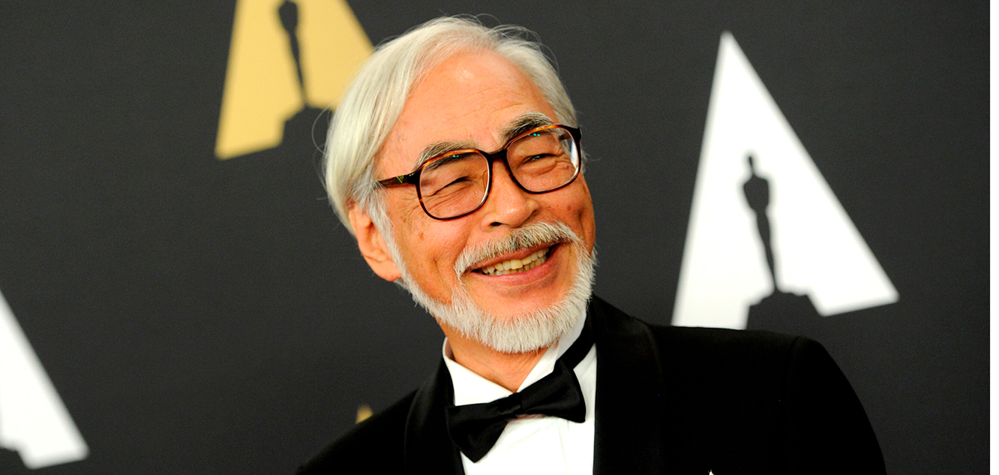
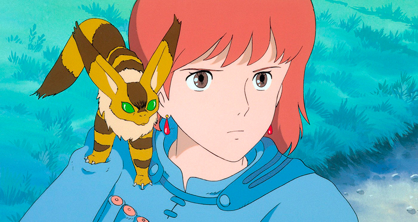
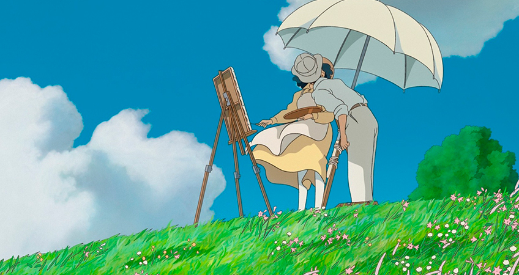
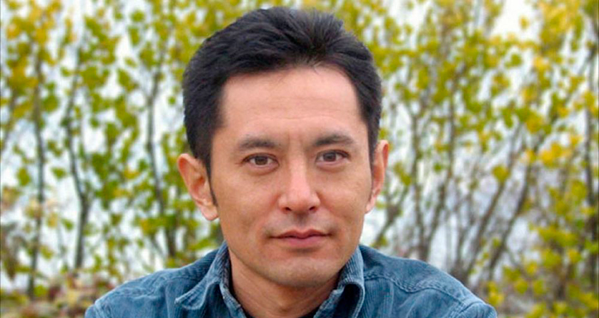

МИСТИЧЕСКАЯ ВСЕЛЕННАЯ ХАЯО МИЯДЗАКИ: 10 ФАКТОВ О РЕЖЕССЕРЕ И ХУДОЖНИКЕ
Благодаря его анимационным фильмам, Хаяо Миядзаки получил две награды Академии , несколько номинаций на премию самого престижного фильма и бесчисленное множество призов на кинофестивалях. Но он не большой любитель получать эти призы лично. Путешествуя по всему миру ради подтверждения своего собственного таланта , вместо того , чтобы искать вдохновение не для него. В 2014 году Хаяо Миядзаки вошел в Зал славы научной фантастики. Его работы регулярно входят в различные списки лучших анимационных фильмов «всех времен». Но величайшее счастье сказочник по-прежнему находит в возможности рисовать удивительные истории своими руками и рассказывать их детям.
1. Миядзаки - большой поклонник авиации.
Хаяо Миядзаки родился 5 января 1941 года в Токио в разгар Второй мировой войны. С раннего детства , мало Хаяо мечтала о небе. Его отец был директором Miyazaki Airplane , производственного концерна, производившего детали для самолетов. Тема полетов , иногда на самых фантастических самолетах , была ключевой в каждой работе Миядзаки - начиная с «Лапута: Небесный замок», находя свое место в «Порко Россо» и «Движущийся замок Хаула» и заканчивая последняя работа режиссера «Ветер поднимается». Прототипы персонажей этого мультфильма , Дзиро и Наоко , главный герой по большей части был скопирован с настоящего авиаконструктора Дзиро Хорикоши). Мать Миядзаки страдала туберкулезом позвоночника и большую часть детства была прикована к постели. Миядзаки заканчивает рассказ в своем мультфильме 1939 года - в самом начале войны и за два года до своего рождения.

2. Ни одного дня не работал по специальности.
Миядзаки не раз признавался, что с детства мечтал стать аниматором. Он понял это еще в старших классах школы, когда увидел в кинотеатре анимационный фильм «Легенда о белой змее». Неизвестно, что именно заставило его поступить на факультет политологии и экономики Университета Гакусюин. Возможно, мечта рисовать сказки показалась Хаяо слишком несерьезной , и он решил получить «взрослую» специальность ( впрочем , в колледже он входил в состав Клуба исследования детской литературы). Как бы то ни было , окончив экономическое образование , в 1963 году Миядзаки устроился аниматором начального уровня в Tōei Animation. Находясь в Теее , он встретил двух самых важных людей в своей жизни - свою жену Ота Акеми и товарища-аниматора , который стал его другом на всю жизнь - Исао Такахату.

3. Он не собирался становиться режиссером.
Миядзаки пытался рисовать мангу еще в школе. Но его первой серьезной графической работой была «Навсикая в долине ветров». В 1982 году Миядзаки какое-то время ничего не делал и начал воплощать в жизнь свои многочисленные идеи , превратив их в мангу. Постапокалиптическая история о героической принцессе, защищающей мирную долину от войны за истощенные природные ресурсы, была опубликована в журнале Animage. Первоначальное соглашение с издателями запрещало Миядзаки снимать киноверсию «Навсикая», но популярность манги вынудила их попросить аниматора сделать сериал с таким же названием. Миядзаки согласился бы только на полнометражный фильм. Работа над «Навсикой» стала для него серьезным испытанием. После того , как фильм был выпущен , Миядзаки сказал: ", Я снял фильм , но потерял всех своих друзей. Я не хочу такой жизни. Я хочу вернуться и снова работать аниматором ».

Продюсер студии Ghibli , Тосио Судзуки , убедил его взять следующий фильм - «Лапута: Замок в небе» . Но, несмотря на «престижный» статус режиссера , Хаяо Миядзаки всегда был в первую очередь художником-мультипликатором. Он всегда создавал «раскадровки» ( доски с ключевыми сценами анимационного фильма) для всех своих работ. В июле 2015 года Миядзаки объявил о выпуске манги «Ветер поднимается».
4. Он учил детей снова мечтать.
В 1985 году Миядзаки и Такахата запустили собственную студию Ghibli. Это необычное название было еще одним почитанием авиации: оно было заимствовано у итальянского самолета Caproni C. 309 Ghibli , которое , в свою очередь , было основано на арабском названии сирокко , более известного как средиземноморский ветер.
Именно в Studio Ghibli Миядзаки создавал свои всемирно известные шедевры. 15 июля , 2015 , студия отметила свое 30 - летие. Тем не менее , в 2014 году , руководство студии объявило , что прекращает работу над полнометражными фильмами , оставив только небольшую команду для работы над проектами Миязаков, рекламные ролики и музыкальные клипы. Но они также сказали, что оставят открытой возможность собрать команду фрилансеров для работы над полнометражным фильмом.
Говоря о своей работе , Хаяо Миядзаки неоднократно признавал, что его собственная студия наконец-то позволила ему начать снимать фильмы, которые, по его мнению, были так необходимы его зрителям. Он хотел научить детей воображать , мечтать о путешествиях и верить в чудеса. Безусловный успех его сказочных притч доказывает, что это ему удалось.
5. Природа играет в его фильмах особую роль.
Миядзаки не любит, когда его называют «японским Уолтом Диснеем» . И даже отдавая должное работе американских аниматоров , он винит их в том, что их характер выглядит слишком искусственным и фальшивым. Сам Миядзаки признает, что манера изображения природы - одна из отличительных черт анимационных фильмов, созданных в Studio Ghibli: «Нас интересуют отношения не только и не столько между людьми , сколько мы изо всех сил стараемся выразить в своей работе то, что красота всего мира в его целостности: взаимодействие ландшафта , климата , времени , солнечного света , растительности , воды , . ветер - все эти прекрасные вещи
«Миядзаки всегда любил путешествовать в своих многочисленных поездках по всему миру , он искал , прежде всего , декорации для своих фильмов из Уэльса. , к примеру , он принес идеи» Лапута: Замок в небе »и« Ходячий замок Хаула » ( по роману британской писательницы Дайаны Винн Джонс). Интересно, что Миядзаки« подсмотрел »за многими пейзажами из« Ходячего замка », путешествуя по Казахстану и Эльзасу.

6. Он не может уйти на пенсию
Мир никогда не увидел бы блестящих творений Миядзаки , которые принесли ему всемирную известность и две премии Оскар. В 1997 году , после выхода «Принцессы Мононоке» , режиссер задумался о выходе на пенсию , потому что его зрение резко ухудшилось. Однако , похоже, Миядзаки не привык, что ему нечего делать. Четыре года спустя , он вернулся с «Унесенные» , которая принесла ему первую премию Американской киноакадемии.
В 2013 году , перед выходом «Ветра поднимается» , Миядзаки заявил, что это будет его последний анимационный фильм. После этого , Миядзаки полностью посвятил себя работе в Ghibli музее, где писал открытки и панно для тематических выставок. Тем не менее , в июле 2015 года , режиссер объявил , что он работает над новым мультфильмом «Boro Гусеница», в котором он будет использовать 3D - анимацию в первый раз.
7. Не любит получать награды.
Миядзаки редко посещает кинофестивали и церемонии награждения. Он почти никогда не смотрели пресс - конференции , после выхода его работ , и вряд ли когда - либо дает интервью. Миядзаки отказался присутствовать на церемонии вручения «Оскара» 2001 года, чтобы принять свою награду за фильм «Унесенные призраками» в знак протеста против американского вторжения в Ирак. Тем не менее , в 2014 году , Миядзаки принял участие в церемонии киноакадемии , чтобы получить награду за вклад в развитие кинематографа.
8. Его сын стал режиссером против воли отца.
У Хаяо Миядзаки двое сыновей: старший , Кейсуке , работает резчиком по дереву , а младший , Горо, признался, что с детства мечтал создавать анимационные фильмы , но по профессии является ландшафтным архитектором. Впервые , он имел возможность работать со своим отцом в 2001 году , во время строительства Ghibli музея.
Когда Горо получил предложение сделать свой собственный анимационный фильм , «Сказания Земноморья», Миядзаки был категорически против этого. Он считал, что нужно расти, чтобы стать режиссером. Горо сказал:«Хаяо Миядзаки - гений, который никогда не перестает совершенствоваться. Я, вероятно, никогда не смогу превзойти его. На самом деле , я думаю, что попытки превзойти его бессмысленны».
Сейчас Горо Миядзаки работает над собственным мультсериалом «Рония , дочь разбойника» по книге Астрид Линдгрен , уделяя особое внимание теме родительско-детских отношений.

9. За всю свою карьеру Хаяо Миядзаки создал только один анимационный фильм для взрослых.
`В Японии , фильмы Миядзаки являются блокбастеры вся семья может наслаждаться. Что касается Европы и Америки , то фильмы Миядзаки там считаются слишком многослойными и, как считается, несут в себе глубокую философию , поэтому они нацелены на более «сознательную» аудиторию.
Сам режиссер говорит , что в его карьере , он создал только один анимационный фильм , направленный на взрослую аудиторию , «The Wind Rises» : « . Этот факт принес мне много страданий очень трудно , почти невозможно для меня , чтобы сделать . анимационный фильм , не представляя лицо зрителей , для которых я создаю это правило , в детском саде в студии Ghibli , которая расположена рядом с моей работой студии , мне помогает: я выйду , взгляд на детях - и сразу понимаю, что нужно делать. «Ветер поднимается» для кого-то другого , а я не знал этого «кого-то»».
10. Внимателен к деталям.
Одна из особенностей работ Миядзаки - в них нет «плоских» и четких персонажей. Они никогда не бывают полностью положительными или отрицательными. Несмотря на демоническую природу и взрывное настроение , Кальцифер из «Ходячего замка Хаула» довольно трогательный и заботливый. Злая Ведьма Пустошей из одноименного мультфильма внезапно превращается в симпатичную даму, дремлющую в кресле. А застенчивый и беспомощный Безликий вдруг становится кровожадным хищником, пожирающим все вокруг , а потом чудесным образом перевоплощается обратно.
Посмотрев свой первый мультфильм в детстве , Миядзаки понял, что красивыми и детализированными должны быть не только главные герои. Поэтому , ни один человек не появляется в его фильмах просто лишний. То же самое и с предметами вокруг людей. Каждый из этих предметов находится именно там, где он должен быть с точки зрения персонажей.
Режиссер много внимания уделяет деталям, которые могут показаться незначительными: обычным вещам и повседневным , автоматическим движениям персонажей. Он тщательно рисует каждую травинку , шатаясь на ветру , сигаретный дым , волосы на щетке, которой героиня моет пол. Именно благодаря этим мелочам так интересно снова и снова смотреть мультфильмы Миядзаки. Дело в том, что режиссер превращает каждый отдельный кадр в законченный фильм.